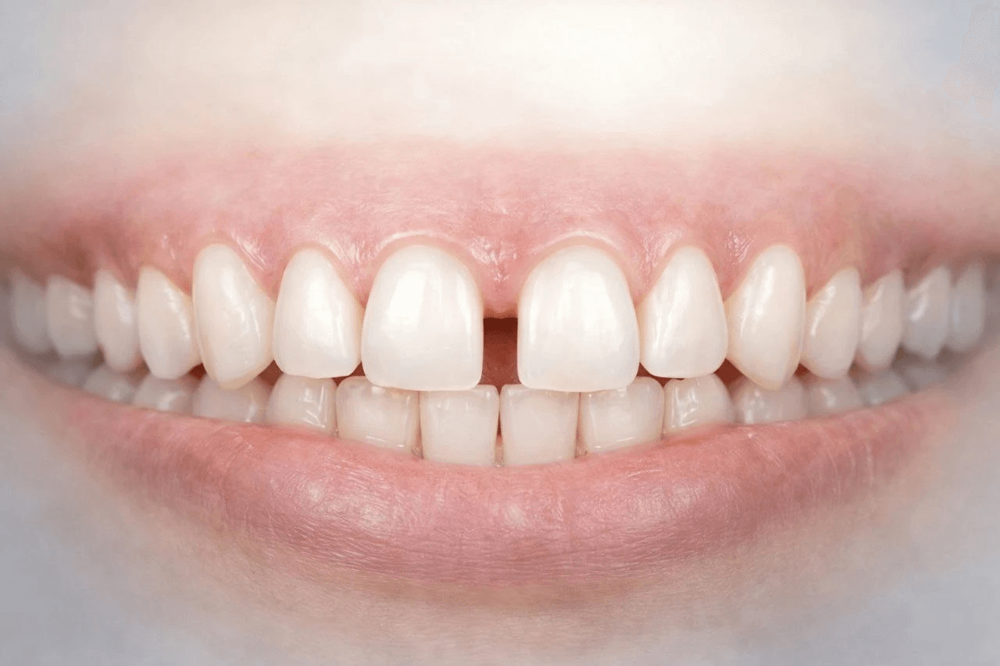

Closing Teeth Gaps Without Braces: The Modern Approach
By Dr. Sudip Roy, Senior Consultant Cosmetic Dental Surgeon
For many adults in Jalpaiguri, the idea of wearing metal braces for two years is a major deterrent to fixing teeth gaps (diastemas). However, modern cosmetic dentistry offers several "braces-free" alternatives that are faster and virtually invisible.
1. Composite Bonding (The 1-Hour Fix)
Dental bonding is the most conservative option. We apply a tooth-colored resin to the sides of the teeth to close the gap. It requires no tooth cutting and is completed in a single visit at our Pahari Para clinic.
2. Porcelain Veneers
If you want a "Hollywood Smile," veneers are the gold standard. These ultra-thin shells cover the front of the teeth, not only closing gaps but also correcting color and shape.
3. Clear Aligners
For gaps caused by slight misalignment, clear aligners provide the results of braces without the metal. They are removable, transparent, and perfect for working professionals over 40.